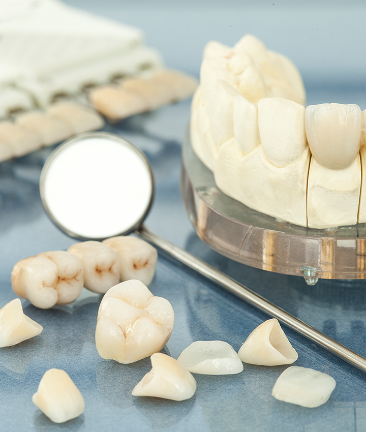
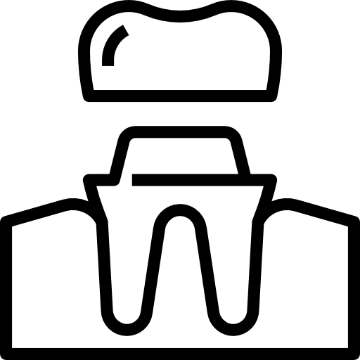

- 當口腔缺牙時，會有牙齒排列越變越歪、容易堆積食物殘渣導致蛀牙、齒槽骨萎縮等問題，這時候就需要透過植牙來維護牙齒健康。
- 人工植牙是將溫和材質製成的植體以手術方式放入齒槽骨中，待幾個月傷口及口腔組織癒合後，再安裝上假牙，恢復牙齒的排列及咀嚼功能。

人工植牙
人工植牙是什麼？
 人工植牙的優點
人工植牙的優點
- 傳統牙橋式假牙，製作之前須將周圍的牙齒磨小，破壞大量健康齒質，並在真牙外面包覆牙橋，不僅浪費了健康的牙齒外，更常常因為無法清潔造成蛀牙。
- 而人工植牙完全避免了上述的問題，不須犧牲周圍的牙齒，咀嚼和清潔更與自然牙無異，只需正常刷牙、定期檢查，就能維持良好的功能，使用年限也更長久。
 人工植牙流程
人工植牙流程
- 諮詢及評估：每位患者口腔狀況皆不同，包含牙齒健康度、齒槽骨高度大小等等，需經醫師詳細斟酌每位患者狀況，擬定客製化的治療計畫。
- 進行手術植入植體：以手術在齒槽骨中置入植體，以替代原本自然牙的牙根，術後靜待傷口及口腔組織癒合，固定植體。
- 裝上假牙：待周圍組織重建完整後，便可裝上假牙牙冠。
- 定期追蹤：植牙後遵照指示，定時回診檢查，確保人工植牙後各項功能運作正常。
人工植牙術後保養
- 避免舔傷口、吐口水、大力漱口等動作
- 請勿吸菸、嚼檳榔
- 避免咀嚼太過堅硬及食用太刺激的食物
- 仍須刷牙，在傷口附近以清水輕刷清潔
- 按醫師處方服藥
- 可以食用流質、高蛋白的食物，如牛奶、水煮蛋
- 術後一兩天可以冰敷


全瓷冠
全瓷冠是以全陶瓷或類陶瓷材質取代傳統金屬假牙，目前市面常用的材料分為玻璃陶瓷及二氧化鋯，完全無金屬成分，不僅擁有自然牙一般的淨透感，且咀嚼功能健全，只要遵從醫師指示、保持良好的潔牙習慣，全瓷冠假牙可以維持15年以上的使用時間，不僅實用又美觀。
為甚麼需要做全瓷冠？
- 根管治療的牙齒：根管治療後，牙齒沒有神經及組織運輸養分，造成結構變得脆弱，容易裂開或碎掉，所以需要做假牙來保護牙齒。
- 牙齒斷裂：因外傷或嚴重蛀牙，造成牙齒斷裂，此時也需要透過假牙來替代健康牙齒的功能。
- 缺牙：當口腔缺牙時，會產生各式各樣牙齒問題，如排列越變越歪、容易堆積食物殘渣導致蛀牙、齒槽骨萎縮等，需透過植牙搭配假牙牙冠填補牙齒缺口。
全瓷冠有什麼優點？
- 不會有牙齦發黑的問題：傳統金屬假牙使用期間一長，與牙齦連接的部分會開始氧化，這些氧化物沉積在邊緣，進而造成牙齦發黑，影響外觀，而全瓷冠完全避免了這個情況，維護牙齦健康與美觀。
- 擁有接近自然牙的淨透感：全瓷冠的材質有良好透光性，不像傳統金屬假牙讓人感覺死白，外觀幾乎與真牙無異，接合點也非常密合，如果您非常注意美觀問題，全瓷冠會是您的首選。
- 不易造成過敏：傳統金屬材質容易讓牙齦過敏，產生出血、腫脹等狀況，全瓷冠的材質則與人體有較佳的相容性，不會對牙齦造成上述的影響。
為甚麼需要做全瓷冠？
- 根管治療的牙齒：根管治療後，牙齒沒有神經及組織運輸養分，造成結構變得脆弱，容易裂開或碎掉，所以需要做假牙來保護牙齒。
- 牙齒斷裂：因外傷或嚴重蛀牙，造成牙齒斷裂，此時也需要透過假牙來替代健康牙齒的功能。
- 缺牙：當口腔缺牙時，會產生各式各樣牙齒問題，如排列越變越歪、容易堆積食物殘渣導致蛀牙、齒槽骨萎縮等，需透過植牙搭配假牙牙冠填補牙齒缺口。
全瓷冠有什麼優點？
- 不會有牙齦發黑的問題：傳統金屬假牙使用期間一長，與牙齦連接的部分會開始氧化，這些氧化物沉積在邊緣，進而造成牙齦發黑，影響外觀，而全瓷冠完全避免了這個情況，維護牙齦健康與美觀。
- 擁有接近自然牙的淨透感：全瓷冠的材質有良好透光性，不像傳統金屬假牙讓人感覺死白，外觀幾乎與真牙無異，接合點也非常密合，如果您非常注意美觀問題，全瓷冠會是您的首選。
- 不易造成過敏：傳統金屬材質容易讓牙齦過敏，產生出血、腫脹等狀況，全瓷冠的材質則與人體有較佳的相容性，不會對牙齦造成上述的影響。